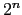

Assembler Syntax
Comments in assembler files begin with a sharp-sign (#).
Everything from the sharp-sign to the end of the line is ignored.
Identifiers are a sequence of alphanumeric characters, underbars (_), and dots (.) that do not begin with a number. Opcodes for
instructions are reserved words that are not valid identifiers.
Labels are declared by putting them at the beginning of a line
followed by a colon, for example:
.data
item: .word 1
.text
.globl main # Must be global
main: lw $t0, item
Strings are enclosed in double-quotes ("). Special characters
in strings follow the C convention:
newline \n
tab \t
quote \"
SPIM supports a subset of the assembler directives provided by the
MIPS assembler:
- .align n
Align the next datum on a  byte
boundary. For example, .align 2 aligns the next value on a word
boundary. .align 0 turns off automatic alignment of .half, .word, .float, and .double directives until
the next .data or .kdata directive.
- .ascii str
Store the string in memory, but do
not null-terminate it.
- .asciiz str
Store the string in memory and
null-terminate it.
- .byte b1, ..., bn
Store the  values in
successive bytes of memory.
values in
successive bytes of memory.
- .comm sym size
Allocate size bytes of
data segment for symbol sym.
- .data <addr>
The following data items should
be stored in the data segment. If the optional argument addr
is present, the items are stored beginning at address addr.
- .double d1, ..., dn
Store the floating
point double precision numbers in successive memory locations.
- .extern sym size
Declare that the datum
stored at sym is size bytes large and is a global symbol.
This directive enables the assembler to store the datum in a portion
of the data segment that is efficiently accessed via register $gp.
- .float f1, ..., fn
Store the floating
point single precision numbers in successive memory locations.
- .globl sym
Declare that symbol sym is
global and can be referenced from other files.
- .half h1, ..., hn
Store the 16-bit
quantities in successive memory halfwords.
- .kdata <addr>
The following data items should
be stored in the kernel data segment. If the optional argument addr is present, the items are stored beginning at address addr.
- .ktext <addr>
The next items are put in the
kernel text segment. In SPIM, these items may only be instructions or
words (see the .word directive below). If the optional argument
addr is present, the items are stored beginning at address
addr.
- .label sym
Declare that symbol sym is a
label.
- .lcomm sym size
Allocate size bytes
for symbol sym in the portion of the data segment that can be
accessed via register $gp.
- .space n
Allocate bytes of space in the
current segment (which must be the data segment in SPIM).
- .set noat
Permit the program to refer to the
$at register explicitly, and forbid SPIM from generating pseudoinstructions
that modify $at.
- .set at
Forbid the program from referring to the
$at register explicitly, and permit SPIM to generate pseudoinstructions
that modify $at (the default).
- .text <addr>
The next items are put in the
user text segment. In SPIM, these items may only be instructions or
words (see the .word directive below). If the optional argument
addr is present, the items are stored beginning at address
addr.
- .word w1, ..., wn
Store the 32-bit
quantities in successive memory words.
SPIM does not distinguish various parts of the data segment (.data, .rdata, and .sdata).
Ian Moor
2009-03-11